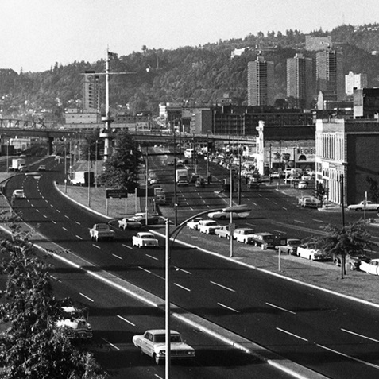

Growth Tour
Want to jump into Portland's rich history of growth? This tour offers an insightful experience, by our very educated tour guides, about the history of Portland's growth. While this tour includes walking and driving most conversations will take place at Deschuttes Brewery over complimentary beer flights and complimentary dining at Portland's oldest restaurant, Huber's.
What's Included?

- Complimentary flight of three Deschutes Brewery beers
- Complimentary tapas-style appetizer at Huber's restaurant
Transportation: Walking/Driving
Food: Included
Price: $80
"I moved to Portland a few years ago and learned so much from our funny and informative tour guide on the evolution of Portland as I know it today." - Alex